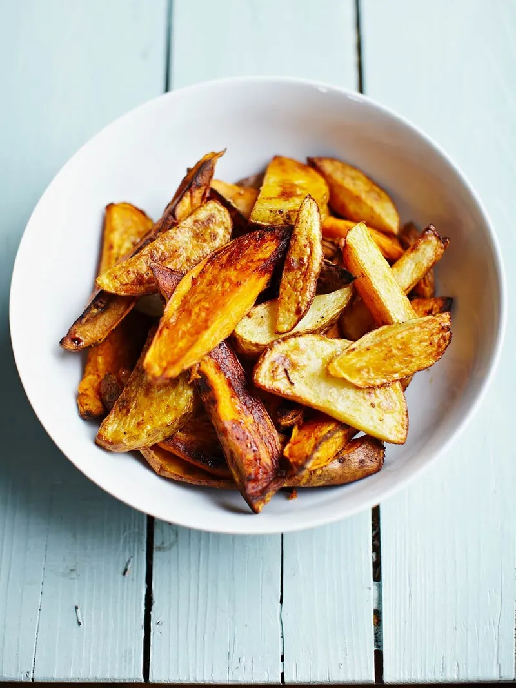

Smoky mixed-potato wedges

“A great recipe for kids – with just a splash of oil and a pinch of seasoning and spice, you can turn the humble potato into delicious homemade wedges.”
Ingredients
- 2 large sweet potatoes
- 2 medium potatoes
- 1 teaspoon sweet smoked paprika
- olive oil
Instructions
- Preheat the oven to 200ºC/400ºF/gas 6.
- Wash the potatoes under cold running water, scrubbing well with a scrubber to get rid of any dirt (there’s no need to peel them).
- On a chopping board, cut each potato in half lengthways, then cut each half in half lengthways, and then each piece in half again so you end up with 8 wedges, then add to a large mixing bowl.
- Sprinkle over a tiny pinch of sea salt and black pepper, and the paprika.
- Drizzle over 2 tablespoons olive oil, then toss everything together to coat.
- Spread out into a single layer over two large baking trays, then bake in the hot oven for 35 to 40 minutes, or until golden and cooked through.
- Use oven gloves to remove the trays from the oven, then leave to sit for a couple of minutes (this will make it easier to remove them from the tray), then use a fish slice to transfer them to a serving dish.
Nutrition per serving
of an adult's reference intake